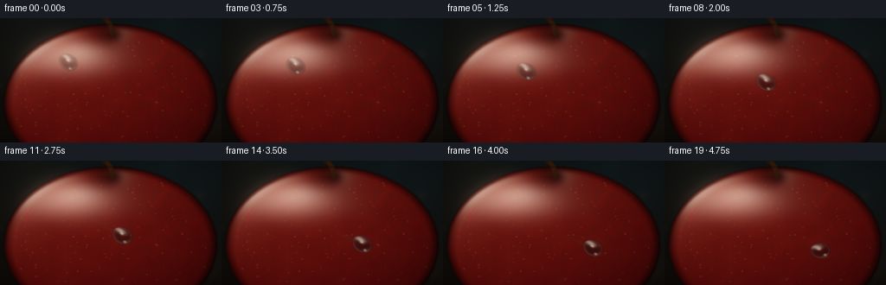
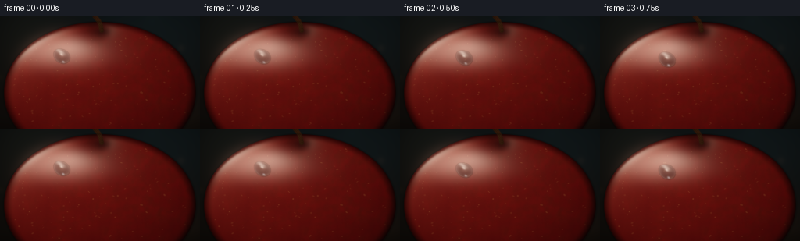
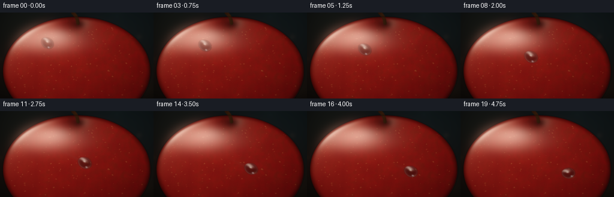
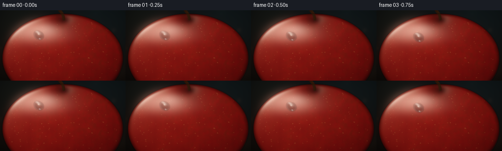
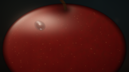
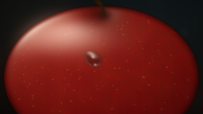
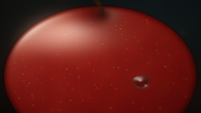

CODING AGENTS AS PIXEL WORLD MODELS
traex/DeepSeek-V4.1-Flash · phygen_038
点击播放 · 原生 RGB 像素
逐轮保存的候选
回放视频、检查图与代码变化。
每份候选均可单独播放。实际图片检查记录在下方工具轨迹中。
候选 01播放与检查图
点击播放 · 原生 RGB 像素


展开代码变化
--- 上一保存版本
+++ 本次保存版本
@@ -0,0 +1,356 @@
+from pathlib import Path
+
+import cv2
+import numpy as np
+
+from artifact_io import save
+
+
+W, H, FPS, N = 256, 144, 4.0, 20
+SS = 4
+RW, RH = W * SS, H * SS
+CASE = Path(__file__).resolve().parent
+
+
+def smoothstep(a, b, x):
+ t = np.clip((x - a) / (b - a), 0.0, 1.0)
+ return t * t * (3.0 - 2.0 * t)
+
+
+def normalize(v):
+ return v / np.linalg.norm(v)
+
+
+def gaussian(x, y, cx, cy, sx, sy):
+ return np.exp(-0.5 * (((x - cx) / sx) ** 2 + ((y - cy) / sy) ** 2))
+
+
+def make_noise(rng, shape, coarse, sigma):
+ small = rng.random((max(2, shape[0] // coarse), max(2, shape[1] // coarse)))
+ small = cv2.resize(small, (shape[1], shape[0]), interpolation=cv2.INTER_CUBIC)
+ return cv2.GaussianBlur(small, (0, 0), sigma)
+
+
+def add_lenticels(img, inside, rng, x0, x1, y0, y1):
+ """Add sparse, slightly irregular apple pores at final-image scale."""
+ for _ in range(135):
+ x = rng.uniform(x0, x1)
+ y = rng.uniform(y0, y1)
+ if not inside[int(y * SS) - 3, int(x * SS) - 3]:
+ continue
+ rx = rng.uniform(0.35, 1.1)
+ ry = rng.uniform(0.28, 0.75)
+ angle = rng.uniform(-0.8, 0.8)
+ pad = int(np.ceil(max(rx, ry) * SS + 4))
+ px, py = int(x * SS), int(y * SS)
+ ya, yb = max(0, py - pad), min(RH, py + pad + 1)
+ xa, xb = max(0, px - pad), min(RW, px + pad + 1)
+ yy, xx = np.mgrid[ya:yb, xa:xb]
+ ux = (xx / SS - x) * np.cos(angle) + (yy / SS - y) * np.sin(angle)
+ uy = -(xx / SS - x) * np.sin(angle) + (yy / SS - y) * np.cos(angle)
+ spot = np.exp(-0.5 * ((ux / rx) ** 2 + (uy / ry) ** 2))
+ edge = 1.0 - smoothstep(0.55, 1.0, np.sqrt((ux / (rx * 2.3)) ** 2 + (uy / (ry * 2.3)) ** 2))
+ color = np.array([0.63, 0.52, 0.23]) * rng.uniform(0.18, 0.42)
+ img[ya:yb, xa:xb] += spot[..., None] * color * edge[..., None]
+ return img
+
+
+def render_background(xx, yy):
+ y = yy / H
+ x = xx / W
+ top = np.array([0.032, 0.045, 0.050])
+ bottom = np.array([0.060, 0.043, 0.031])
+ img = top[None, None, :] * (1.0 - y[..., None]) + bottom[None, None, :] * y[..., None]
+
+ # A cool window glow and a few warm, defocused kitchen lights.
+ glow = gaussian(xx, yy, 204, 18, 82, 62)
+ img += glow[..., None] * np.array([0.035, 0.060, 0.066])
+ img += gaussian(xx, yy, 36, 25, 42, 50)[..., None] * np.array([0.055, 0.050, 0.032])
+ img += gaussian(xx, yy, 225, 128, 30, 25)[..., None] * np.array([0.045, 0.025, 0.012])
+
+ rng = np.random.default_rng(12)
+ for _ in range(13):
+ bx = rng.uniform(0, W)
+ by = rng.uniform(0, H)
+ radius = rng.uniform(2.0, 8.5)
+ strength = rng.uniform(0.012, 0.060)
+ tint = rng.choice(
+ [np.array([0.75, 0.48, 0.22]), np.array([0.34, 0.58, 0.45]), np.array([0.64, 0.38, 0.25])],
+ p=[0.45, 0.25, 0.30],
+ )
+ disc = np.exp(-0.5 * (((xx - bx) / radius) ** 2 + ((yy - by) / radius) ** 2))
+ img += disc[..., None] * tint * strength
+
+ # Out-of-focus table edge gives the macro scene a little depth.
+ table = smoothstep(124, 146, yy)
+ img = img * (1.0 - 0.30 * table[..., None])
+ img += 0.014 * table[..., None] * np.array([0.48, 0.35, 0.22])
+ return img
+
+
+def build_apple(rng):
+ xx = (np.arange(RW, dtype=np.float32) + 0.5) / SS
+ yy = (np.arange(RH, dtype=np.float32) + 0.5) / SS
+ x, y = np.meshgrid(xx, yy)
+
+ cx, cy, rx, ry = 128.0, 98.0, 123.0, 91.0
+ X = (x - cx) / rx
+ Y = (y - cy) / ry
+ rho = np.sqrt(X * X + Y * Y)
+ body = 1.0 - rho
+ inside = body > 0
+
+ # A broad ellipsoid is modulated by a shallow stem dimple and soft lobes.
+ z = 62.0 * np.sqrt(np.clip(1.0 - rho * rho, 0.0, 1.0))
+ dimple = 18.0 * np.exp(-0.5 * (((x - 128.0) / 15.5) ** 2 + ((y - 17.0) / 12.0) ** 2))
+ shoulder = 2.1 * np.exp(-0.5 * (((x - 128.0) / 38.0) ** 2 + ((y - 9.0) / 16.0) ** 2))
+ z = z - dimple + shoulder
+ dzdy, dzdx = np.gradient(z)
+ n = np.stack((-dzdx, -dzdy, np.ones_like(z)), axis=-1)
+ n /= np.linalg.norm(n, axis=-1, keepdims=True)
+ nz = n[..., 2]
+
+ # Broadly varied apple pigment: crimson body, amber cheek, and a restrained green blush.
+ n_low = make_noise(rng, (RH, RW), 34, 25)
+ n_mid = make_noise(rng, (RH, RW), 9, 8)
+ n_fine = make_noise(rng, (RH, RW), 2, 1.2)
+ n_low = (n_low - n_low.min()) / (n_low.max() - n_low.min())
+ n_mid = (n_mid - n_mid.min()) / (n_mid.max() - n_mid.min())
+ n_fine = (n_fine - n_fine.min()) / (n_fine.max() - n_fine.min())
+
+ crimson = np.array([0.67, 0.018, 0.035])
+ ruby = np.array([0.43, 0.008, 0.025])
+ amber = np.array([0.91, 0.22, 0.045])
+ green_gold = np.array([0.53, 0.40, 0.075])
+
+ warm = np.clip(0.48 + 0.38 * (n_low - 0.48) + 0.14 * (0.45 - X) + 0.09 * (0.45 - Y), 0, 1)
+ green = np.clip(0.18 + 0.65 * n_low + 0.18 * X - 0.10 * Y, 0, 1)
+ green *= smoothstep(0.35, 1.0, 0.65 * n_mid + 0.35)
+ albedo = ruby[None, None, :] * (1.0 - warm[..., None]) + crimson[None, None, :] * warm[..., None]
+ albedo = albedo * (1.0 - 0.22 * green[..., None]) + amber[None, None, :] * (0.16 * warm * (1.0 - green))[..., None]
+ albedo = albedo * (1.0 - 0.11 * green[..., None]) + green_gold[None, None, :] * (0.11 * green)[..., None]
+
+ # Fine skin streaks and wax mottling.
+ streak = 0.5 + 0.5 * np.sin(0.55 * x + 4.8 * n_mid + 1.2 * n_low)
+ albedo *= (0.91 + 0.11 * n_mid + 0.035 * n_fine + 0.025 * streak)[..., None]
+ albedo += np.array([0.022, 0.006, 0.002]) * (n_fine - 0.5)[..., None]
+ albedo = add_lenticels(albedo, inside, rng, 18, 239, 20, 141)
+
+ Lkey = normalize(np.array([-0.52, -0.64, 0.66]))
+ Lfill = normalize(np.array([0.72, -0.08, 0.42]))
+ Lrim = normalize(np.array([0.36, 0.34, 0.12]))
+ V = np.array([0.0, 0.0, 1.0])
+ Hkey = normalize(Lkey + V)
+
+ ndl = np.clip(n @ Lkey, 0, 1)
+ fill = np.clip(n @ Lfill, 0, 1)
+ rim_l = np.clip(n @ Lrim, 0, 1)
+ fres = np.power(1.0 - np.clip(nz, 0, 1), 2.2)
+
+ shade = 0.19 + 0.78 * ndl + 0.17 * fill
+ color = albedo * shade[..., None]
+ color += amber[None, None, :] * (0.08 * ndl * warm)[..., None]
+ color += np.array([0.055, 0.105, 0.125]) * (0.30 * fres * rim_l)[..., None]
+
+ # Soft and sharp wax reflections.
+ ndh = np.clip(n @ Hkey, 0, 1)
+ soft_spec = np.power(ndh, 22) * 0.30
+ sharp_spec = np.power(ndh, 150) * 0.95
+ softbox = gaussian(x, y, 79, 47, 38, 13) + 0.62 * gaussian(x, y, 92, 38, 20, 8)
+ softbox *= (0.35 + 0.65 * inside) * (0.5 + 0.5 * ndl)
+ edge_spec = fres * (0.18 + 0.50 * rim_l)
+ color += (soft_spec + 0.35 * edge_spec)[..., None] * np.array([1.0, 0.79, 0.61])
+ color += (sharp_spec + 0.65 * softbox)[..., None] * np.array([1.0, 0.92, 0.78])
+
+ # Ambient occlusion in the stem well and at the silhouette.
+ ao = 1.0 - 0.47 * np.exp(-0.5 * (((x - 128.0) / 20.0) ** 2 + ((y - 18.0) / 17.0) ** 2))
+ edge_dark = 1.0 - 0.56 * smoothstep(0.90, 1.0, rho)
+ color *= (ao * edge_dark)[..., None]
+
+ alpha = np.clip(body * min(rx, ry) * SS + 0.5, 0.0, 1.0)
+ bg = render_background(x, y)
+ image = bg * (1.0 - alpha[..., None]) + color * alpha[..., None]
+
+ # Stem: a compact, woody arc emerging from the dimple.
+ stem_mask = np.zeros((RH, RW), np.float32)
+ pts = np.array([[130, 18], [129, 12], [127, 7], [124, 3], [121, 0]], np.int32)
+ pts_hr = (pts * SS).astype(np.int32)
+ cv2.polylines(stem_mask, [pts_hr], False, 1.0, thickness=int(5.0 * SS), lineType=cv2.LINE_AA)
+ stem_mask = cv2.GaussianBlur(stem_mask, (0, 0), 0.55 * SS)
+ stem_mask = np.clip(stem_mask * 1.35, 0, 1)
+ stem_shadow = cv2.GaussianBlur(
+ (np.exp(-0.5 * (((x - 132.0) / 7.0) ** 2 + ((y - 20.0) / 4.0) ** 2)) * inside).astype(np.float32),
+ (0, 0),
+ 2.0 * SS,
+ )
+ image *= (1.0 - 0.50 * stem_shadow[..., None])
+ stem_col = np.array([0.18, 0.085, 0.030])[None, None, :]
+ stem_col = stem_col * (0.55 + 0.75 * gaussian(x, y, 127, 10, 7, 15)[..., None])
+ stem_col += 0.045 * np.array([0.8, 0.45, 0.18]) * (0.5 + 0.5 * np.sin(2.5 * x + 3.0 * y))[..., None]
+ image = image * (1.0 - stem_mask[..., None]) + stem_col * stem_mask[..., None]
+
+ # Darken the outer one-pixel silhouette just enough to separate it from the background.
+ outer = smoothstep(0.975, 1.0, rho) * (1.0 - smoothstep(1.0, 1.025, rho))
+ image *= (1.0 - 0.25 * outer[..., None])
+ return np.clip(image, 0, 4).astype(np.float32), inside, x, y, cx, cy, rx, ry
+
+
+def path_point(t):
+ t = np.clip(t, 0.0, 1.0)
+ e = t * t * (3.0 - 2.0 * t)
+ x = 79.0 + 101.0 * e
+ y = 51.0 + 53.0 * e + 3.2 * np.sin(np.pi * e)
+ return x, y
+
+
+def draw_trail(base, x, y, t):
+ if t <= 0.01:
+ return base
+ # A short, faint wet track follows the current drop without dominating the skin.
+ tail_t = max(0.0, t - 0.26)
+ samples = np.linspace(tail_t, t, 18)
+ pts = np.array([path_point(s) for s in samples], dtype=np.float32)
+ accum = np.zeros((RH, RW), np.float32)
+ weight = np.linspace(0.0, 1.0, len(pts))
+ yy, xx = np.mgrid[0:RH, 0:RW]
+ xx = (xx + 0.5) / SS
+ yy = (yy + 0.5) / SS
+ for i in range(len(pts) - 1):
+ ax, ay = pts[i]
+ bx, by = pts[i + 1]
+ vx, vy = bx - ax, by - ay
+ denom = vx * vx + vy * vy + 1e-5
+ u = np.clip(((xx - ax) * vx + (yy - ay) * vy) / denom, 0, 1)
+ dx = xx - (ax + u * vx)
+ dy = yy - (ay + u * vy)
+ dist = np.sqrt(dx * dx + dy * dy)
+ width = 1.15 + 0.65 * weight[i]
+ seg = np.exp(-0.5 * (dist / width) ** 2) * (0.10 + 0.50 * weight[i])
+ accum = np.maximum(accum, seg.astype(np.float32))
+ accum = cv2.GaussianBlur(accum, (0, 0), 0.7 * SS)
+ wet = accum[..., None]
+ sheen = 0.10 * wet * np.array([0.95, 0.79, 0.68])[None, None, :]
+ return base * (1.0 - 0.18 * wet) + sheen
+
+
+def render_drop(base, center, direction, radius, frame_index):
+ cx, cy = center
+ theta = np.arctan2(direction[1], direction[0])
+ yy, xx = np.mgrid[0:RH, 0:RW]
+ xx = (xx + 0.5) / SS
+ yy = (yy + 0.5) / SS
+ dx = xx - cx
+ dy = yy - cy
+ ca, sa = np.cos(theta), np.sin(theta)
+ u = dx * ca + dy * sa
+ v = -dx * sa + dy * ca
+
+ ru = radius * 1.16
+ rv = radius * 0.92
+ # Slightly fuller leading edge and a fine trailing taper make the water shape read as moving.
+ taper = 1.0 - 0.10 * np.clip(-u / ru, 0.0, 1.0)
+ rnorm = np.sqrt((u / ru) ** 2 + (v / (rv * taper)) ** 2)
+ mask = np.clip((1.0 - rnorm) * radius * SS * 1.5 + 0.5, 0.0, 1.0)
+ mask = cv2.GaussianBlur(mask, (0, 0), 0.35 * SS)
+
+ # Contact shadow and focused caustic sit on the apple, underneath the water.
+ shadow = np.exp(-0.5 * (((xx - cx - 3.8) / (radius * 1.28)) ** 2 + ((yy - cy - 5.0) / (radius * 0.90)) ** 2))
+ shadow *= 0.55 * mask
+ shadow = cv2.GaussianBlur(shadow.astype(np.float32), (0, 0), 1.3 * SS)
+ base = base * (1.0 - 0.27 * shadow[..., None])
+ caustic = gaussian(xx, yy, cx + 5.5, cy + 6.2, 2.8, 1.7)
+ base = base + caustic[..., None] * np.array([0.16, 0.12, 0.075])
+
+ # Magnifying lens displacement, with a little opposite-side bend near the rim.
+ qx = dx * SS
+ qy = dy * SS
+ lens = 0.62 + 0.48 * np.clip(rnorm, 0, 1) ** 2
+ map_x = ((cx * SS) + qx * lens).astype(np.float32)
+ map_y = ((cy * SS) + qy * lens - 0.7 * SS).astype(np.float32)
+ refracted = cv2.remap(
+ base,
+ map_x,
+ map_y,
+ interpolation=cv2.INTER_CUBIC,
+ borderMode=cv2.BORDER_REFLECT_101,
+ )
+
+ # The dark water rim, a cool internal caustic, and two crisp window reflections.
+ rim = np.exp(-0.5 * ((rnorm - 0.91) / 0.075) ** 2)
+ inner_dark = np.exp(-0.5 * ((rnorm - 0.76) / 0.16) ** 2)
+ lead = np.clip(u / ru, 0, 1)
+ low = np.clip(v / rv, 0, 1)
+ drop_col = refracted * 0.76
+ drop_col += (0.18 * rim * (0.40 + 0.60 * low))[..., None] * np.array([0.92, 0.82, 0.70])
+ drop_col += (0.07 * inner_dark * (1.0 - 0.45 * lead))[..., None] * np.array([0.55, 0.83, 0.88])
+ drop_col *= (1.0 - 0.22 * np.exp(-0.5 * ((rnorm - 0.53) / 0.30) ** 2))[..., None]
+
+ # Specular reflection: one broad cool-white lobe plus a tiny hard glint.
+ spec_center_u = -0.34 * ru
+ spec_center_v = -0.42 * rv
+ spec = np.exp(
+ -0.5 * (((u - spec_center_u) / (0.34 * ru)) ** 2 + ((v - spec_center_v) / (0.17 * rv)) ** 2)
+ )
+ spec += 0.95 * np.exp(
+ -0.5 * (((u + 0.12 * ru) / (0.13 * ru)) ** 2 + ((v + 0.18 * rv) / (0.10 * rv)) ** 2)
+ )
+ glint = np.exp(
+ -0.5 * (((u - 0.48 * ru) / (0.10 * ru)) ** 2 + ((v - 0.55 * rv) / (0.09 * rv)) ** 2)
+ )
+ drop_col += (0.95 * spec)[..., None] * np.array([1.0, 0.94, 0.83])
+ drop_col += (0.72 * glint)[..., None] * np.array([0.91, 0.98, 1.0])
+
+ # A thin dark edge keeps the water legible against the glossy red apple.
+ dark_edge = np.exp(-0.5 * ((rnorm - 1.02) / 0.045) ** 2)
+ drop_col *= (1.0 - 0.24 * dark_edge)[..., None]
+
+ alpha = mask * 0.96
+ out = base * (1.0 - alpha[..., None]) + drop_col * alpha[..., None]
+ return out, mask
+
+
+def postprocess(img):
+ # Gentle bloom from the wax and water highlights.
+ lum = img.max(axis=-1)
+ bright = np.clip((lum - 0.58) * 1.35, 0, None)
+ glow = img * bright[..., None]
+ glow = cv2.GaussianBlur(glow, (0, 0), 2.4 * SS)
+ img = img + 0.31 * glow
+
+ # Soft filmic shoulder and restrained warm/cool color grade.
+ img = np.clip(img, 0, None)
+ img = img / (1.0 + 0.68 * img)
+ img = np.power(img, 1.06)
+ yy, xx = np.mgrid[0:H, 0:W]
+ xn = (xx - W * 0.5) / (W * 0.5)
+ yn = (yy - H * 0.5) / (H * 0.5)
+ vignette = 1.0 - 0.18 * np.clip((xn * xn * 0.72 + yn * yn * 0.55), 0, 1.4)
+ img *= vignette[..., None]
+ img += 0.008 * np.array([1.0, 0.92, 0.80])[None, None, :]
+ return np.clip(img * 255.0 + 0.5, 0, 255).astype(np.uint8)
+
+
+def main():
+ rng = np.random.default_rng(38)
+ base, inside, x, y, cx, cy, rx, ry = build_apple(rng)
+ frames = []
+ for i in range(N):
+ t = i / (N - 1)
+ px, py = path_point(t)
+ px2, py2 = path_point(min(1.0, t + 0.012))
+ direction = np.array([px2 - px, py2 - py], dtype=np.float32)
+ direction /= np.linalg.norm(direction) + 1e-8
+ frame = draw_trail(base, px, py, t)
+ # Subtle, smooth size change as the drop traverses the curved cheek.
+ radius = 10.0 + 0.55 * np.sin(np.pi * t)
+ frame, _ = render_drop(frame, (px, py), direction, radius, i)
+ frame = cv2.resize(frame, (W, H), interpolation=cv2.INTER_AREA)
+ frames.append(postprocess(frame))
+
+ frames = np.stack(frames)
+ save(frames, CASE)
+ print(f"saved {len(frames)} frames to {CASE}")
+
+
+if __name__ == "__main__":
+ main()
候选 02播放与检查图
点击播放 · 原生 RGB 像素


展开代码变化
--- 上一保存版本
+++ 本次保存版本
@@ -147,15 +147,17 @@
rim_l = np.clip(n @ Lrim, 0, 1)
fres = np.power(1.0 - np.clip(nz, 0, 1), 2.2)
- shade = 0.19 + 0.78 * ndl + 0.17 * fill
+ # A large, softbox-like source makes the waxed skin readable well into the shadow side.
+ soft_sky = np.clip(0.56 * nz + 0.16, 0.0, 1.0)
+ shade = 0.34 + 0.69 * ndl + 0.31 * fill + 0.22 * soft_sky
color = albedo * shade[..., None]
- color += amber[None, None, :] * (0.08 * ndl * warm)[..., None]
- color += np.array([0.055, 0.105, 0.125]) * (0.30 * fres * rim_l)[..., None]
+ color += amber[None, None, :] * (0.14 * ndl * warm)[..., None]
+ color += np.array([0.070, 0.125, 0.145]) * (0.36 * fres * rim_l)[..., None]
# Soft and sharp wax reflections.
ndh = np.clip(n @ Hkey, 0, 1)
- soft_spec = np.power(ndh, 22) * 0.30
- sharp_spec = np.power(ndh, 150) * 0.95
+ soft_spec = np.power(ndh, 22) * 0.34
+ sharp_spec = np.power(ndh, 150) * 1.08
softbox = gaussian(x, y, 79, 47, 38, 13) + 0.62 * gaussian(x, y, 92, 38, 20, 8)
softbox *= (0.35 + 0.65 * inside) * (0.5 + 0.5 * ndl)
edge_spec = fres * (0.18 + 0.50 * rim_l)
@@ -164,7 +166,7 @@
# Ambient occlusion in the stem well and at the silhouette.
ao = 1.0 - 0.47 * np.exp(-0.5 * (((x - 128.0) / 20.0) ** 2 + ((y - 18.0) / 17.0) ** 2))
- edge_dark = 1.0 - 0.56 * smoothstep(0.90, 1.0, rho)
+ edge_dark = 1.0 - 0.38 * smoothstep(0.92, 1.0, rho)
color *= (ao * edge_dark)[..., None]
alpha = np.clip(body * min(rx, ry) * SS + 0.5, 0.0, 1.0)
可观测工具轨迹
实际执行的命令与返回图片。
命令 1exit 0
/bin/bash -c "sed -n '1,240p' prompt.txt"
命令 2exit 0
/bin/bash -c "sed -n '1,280p' GENERATION_RULES.md"
命令 3exit 0
/bin/bash -c 'cat task_spec.json'
命令 4exit 0
/bin/bash -c "find . -maxdepth 3 -type f -not -path './.git/*' -printf '%p\\n' | sort | head -200"
命令 5exit 0
/bin/bash -c "sed -n '1,260p' artifact_io.py"
命令 6exit 0
/bin/bash -c "sed -n '1,240p' player_template.html"
命令 7exit 0
/bin/bash -c "python - <<'PY' import sys mods=['numpy','PIL','scipy','cv2','imageio','matplotlib'] for m in mods: try: x=__import__(m); print(m, getattr(x,'__version__','ok')) except Exception as e: print(m, 'MISSING', e) PY"
命令 8exit 127
/bin/bash -c "/usr/bin/time -f 'elapsed=%E maxrss=%MKB' python generate.py"
命令 9exit 1
/bin/bash -c 'time python generate.py'
命令 10exit 0
/bin/bash -c 'time python generate.py'
命令 11exit 0
/bin/bash -c "sed -n '120,270p' generate.py"
命令 12exit 0
/bin/bash -c 'python generate.py'
命令 13exit 0
/bin/bash -c 'ls -lh frames/00.png frames/19.png pixels.npz index.html inspection.png transition_check.png'
命令 14exit 0
/bin/bash -c "python - <<'PY'
from PIL import Image
import numpy as np
for i in [0,4,8,12,16,19]:
a=np.asarray(Image.open(f'frames/{i:02d}.png'))
print(i, a.mean((0,1)).round(1), a.min(), a.max(), np.mean(np.abs(a.astype(int)-a.mean((0,1),keepdims=True).astype(int))))
PY"命令 15exit 0
/bin/bash -c "python - <<'PY'
from pathlib import Path
import json, re
import numpy as np
from PIL import Image
spec=json.loads(Path('task_spec.json').read_text())
files=sorted(Path('frames').glob('*.png'))
arr=np.load('pixels.npz')['pixels']
assert len(files)==spec['frames']==20
assert arr.shape==(144,256,20) and arr.dtype==np.uint32
for p in files:
im=Image.open(p)
assert im.size==(256,144) and im.mode=='RGB'
html=Path('index.html').read_text()
assert 'window.__pixelReady=true' in html and '\"frames\":20' in html
print('PASS')
print('frames', len(files), 'size', Image.open(files[0]).size, 'pixels', arr.shape)
print('player bytes', Path('index.html').stat().st_size, 'all RGB')
PY"视觉工具实际返回图片 1

视觉工具实际返回图片 2

视觉工具实际返回图片 3

视觉工具实际返回图片 4

视觉工具实际返回图片 5

视觉工具实际返回图片 6

保存候选 2 份；完成命令 15 次；可验证图片返回 6 张。原始 API 响应与完整日志保留在本地。